你的 Mac，随处清晰
全彩视频，屏幕量身适配，在 iPad、iPhone 和 iPhone Duo 上都一样。就像坐在你的 Mac 面前。

€4.99，一次购买。无需帐户，没有广告。
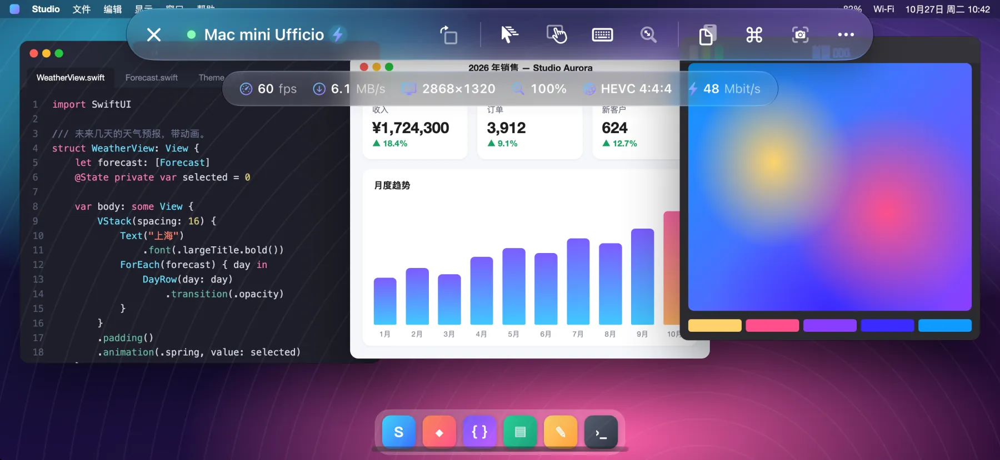
- 60 fps
- HEVC 4:4:4
- Retina
工作原理
Open Remote PRO 连接 macOS 内置的屏幕共享，与 Apple Remote Desktop 使用的是同一项服务。
- 无需在 Mac 上安装任何软件
- 无需创建帐户
- 数据不经过第三方服务器
全彩画面，60 fps 流畅
全彩 HEVC 4:4:4 视频，硬件解码：文字与 Mac 屏幕上一样清晰，渐变和照片没有色边。滚动、拖移窗口、观看视频，最高 60 fps，低延迟，流畅顺滑。
如果 Mac 不提供视频模式，App 会自动切换到经典的 VNC 编码。
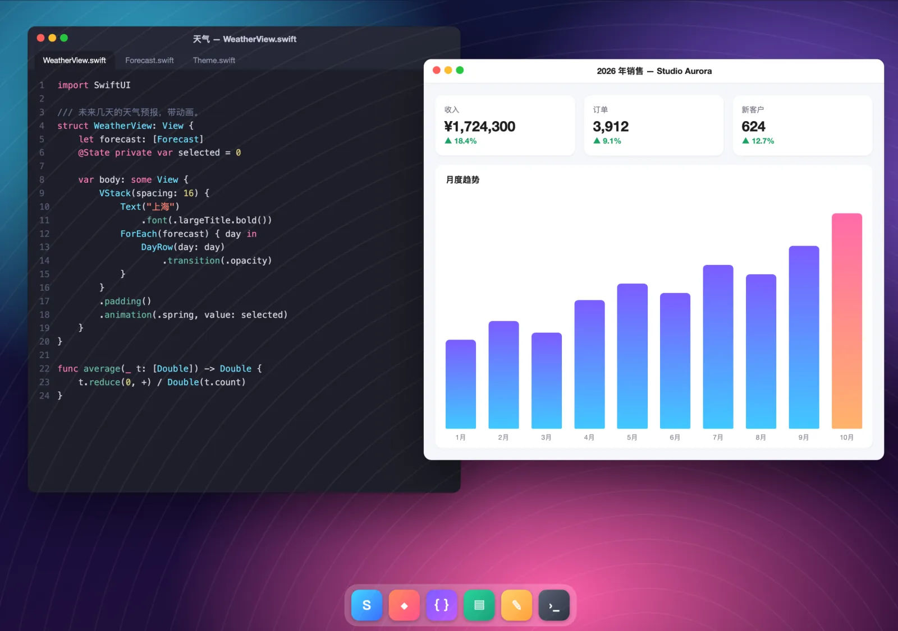
屏幕随你而变
Mac 会创建一台与你的屏幕尺寸完全一致的 Retina 虚拟显示器：没有黑边，文字也不会过小。旋转设备、使用分屏浏览或台前调度、展开 iPhone Duo：显示器都会自动调整尺寸。
- 键盘打开时由你决定：用两指滑动查看被遮住的部分，或者把 Mac 屏幕缩小到可见区域。
- 在 iPhone 上，即使开启了竖排方向锁定，也能用按钮旋转屏幕。
- 连接多台显示器的 Mac：轻点即可切换，也可以同时查看全部显示器。
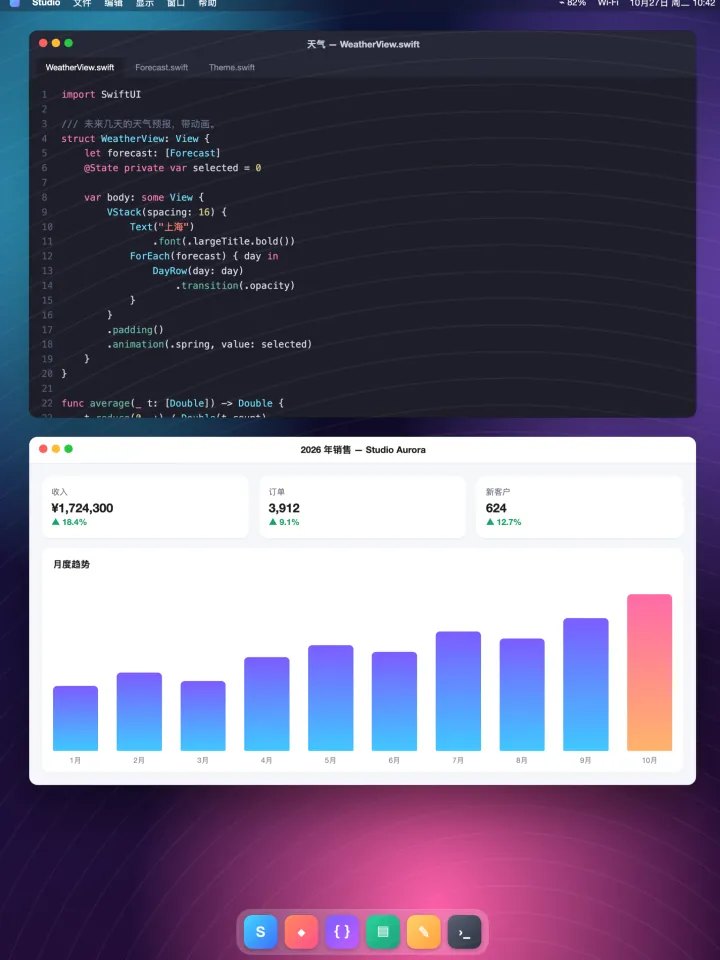
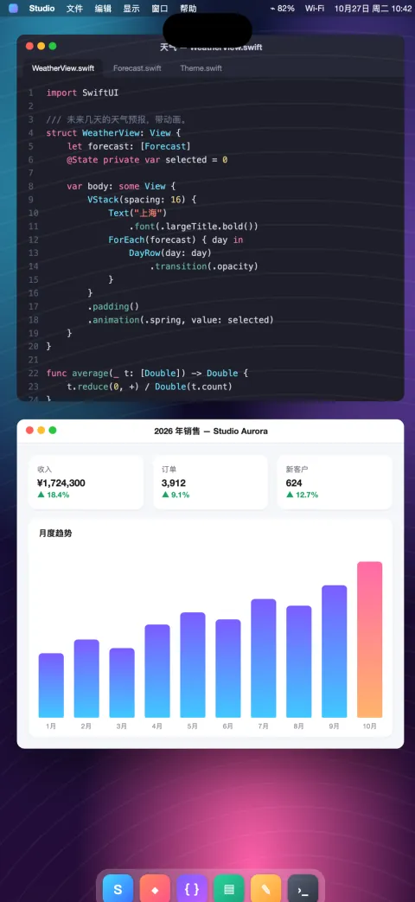
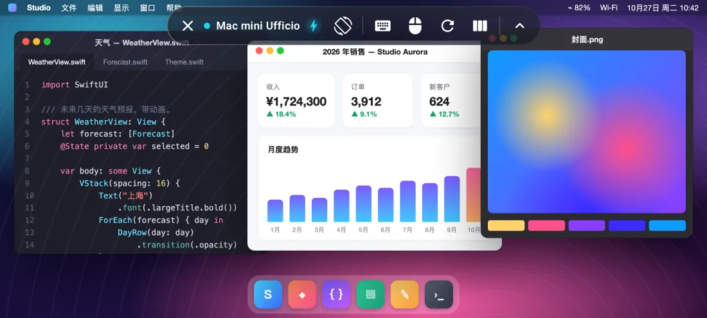
为 iPhone Duo 优化
展开手机，Mac 屏幕随之变大；合上手机，它会适配外屏。
合上时，Mac 画面适配外屏。 展开后，它就是一块真正的 7.6 英寸桌面，拥有笔记本电脑般的空间。
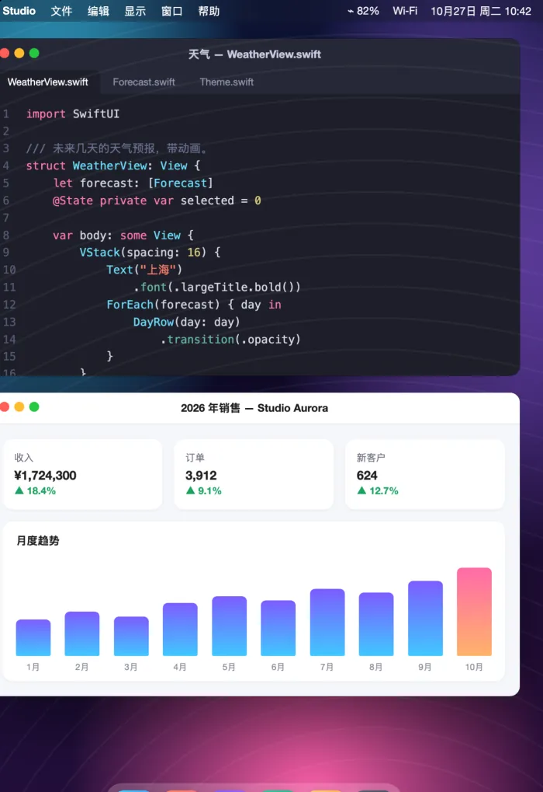
- 开合手机的一瞬间，Mac 的虚拟显示器就会调整尺寸：无需重新连接，没有黑边。
- 控制栏会在外屏和内屏之间自动重新排列。
- 另有旋转屏幕按钮，转动手机时还会提示你旋转。
鼠标、触控板和键盘
全面支持蓝牙和 USB 鼠标、触控板与键盘，包括妙控键盘、妙控板和妙控鼠标。
- 指针可以移动并悬停在项目上，与在 Mac 上一样。
- 左键点按和右键点按。
- 在触控板上双指滚动，或用鼠标滚轮滚动，连续或逐格均可。
- 实体键盘使用正确的布局，带重音的字母和符号也能准确输入。
- 修饰键 ⌘ ⌥ ⌃ ⇧。
适用于 iPad 和 iPhone 版 App。
试试看：在你的键盘上按下 ⌘、⌥、⌃ 或 ⇧。
所有 Mac，一目了然
为在家、在工作室或在办公室管理多台 Mac 的你而设计。
- 在使用 Apple Remote Desktop？可快速导入从 Remote Desktop 导出的电脑列表。
- 卡片显示每台 Mac 的最新画面和实时状态：可用或无法访问。
- 自动发现局域网中的 Mac，并可按地址快速连接。
- 通过 SSH 远程管理：硬件、系统与磁盘信息，已安装的 App，锁定屏幕、睡眠、重新启动和关机，并验证 Mac 的身份。
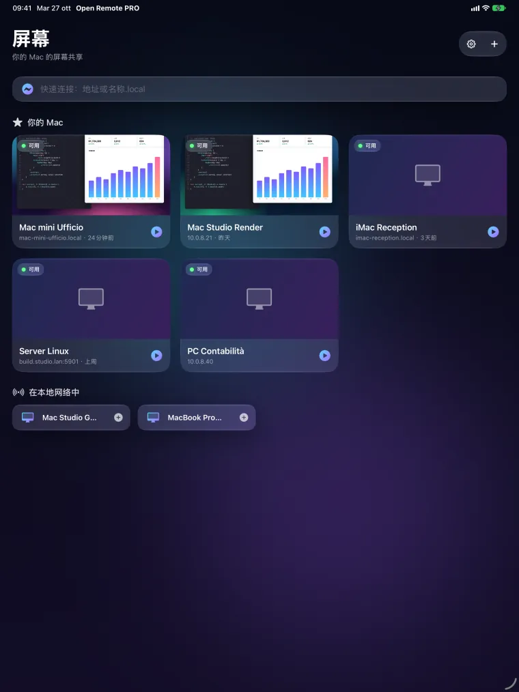
操控、兼容、隐私
自然的操控
- 触控板模式或直接触控，双指点按即右键，双指缩放平滑无顿挫。
- 带惯性的精准滚动；三指滚动翻页。
- 带有 esc、tab、方向键、F1–F12 和修饰键的工具栏；常用快捷操作一应俱全（调度中心、聚焦、快照等）。
- Mac 与你的设备共享剪贴板；屏幕快照可以存储或共享。
- 观察模式：只看不碰。
也支持 PC 和 Linux
- Windows 和 Linux 上的标准 VNC 服务器。
- 在 iPad 和 iPhone 上通过远程桌面 (RDP) 连接 Windows PC。
Android 版即将登陆 Google Play
适用于 Android 手机、折叠屏手机和平板电脑：最高 60 fps，流畅顺滑（支持的屏幕上最高 120 fps）。
隐私从设计开始
- 无需帐户，没有广告，没有跟踪。
- 密码和密钥保存在你设备的钥匙串中。
- App 只连接你指定的电脑。
屏幕截图
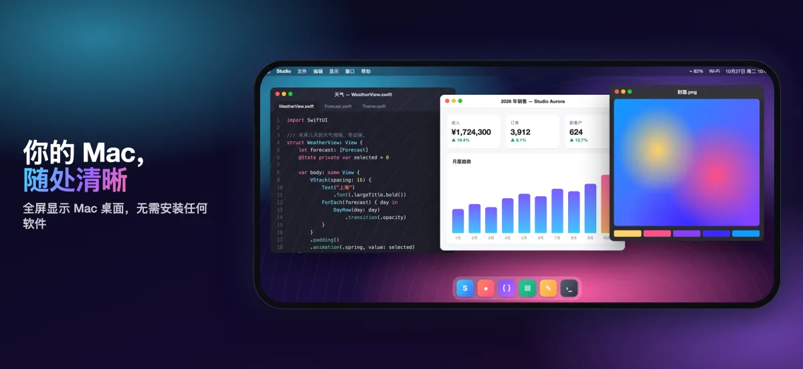
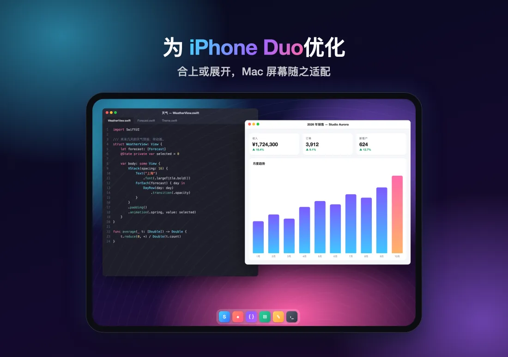
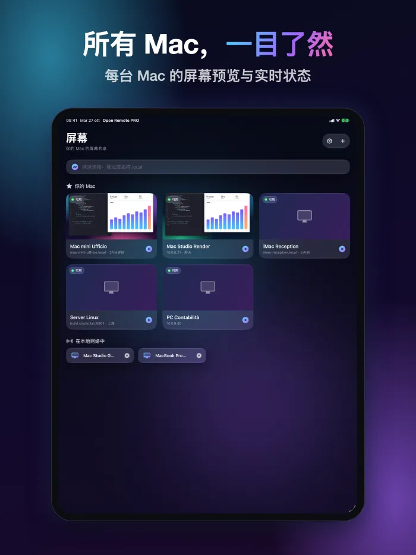
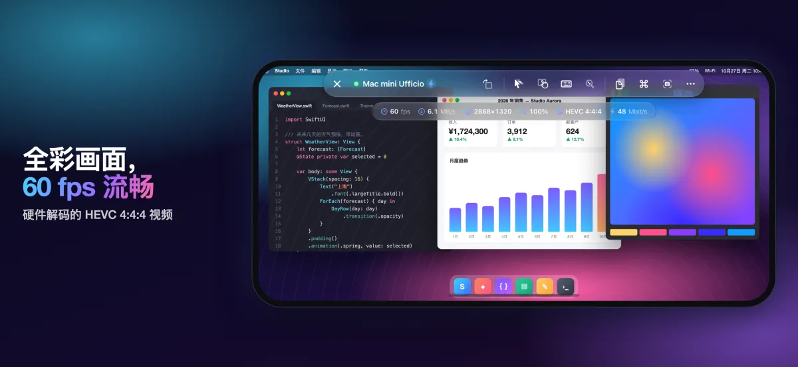
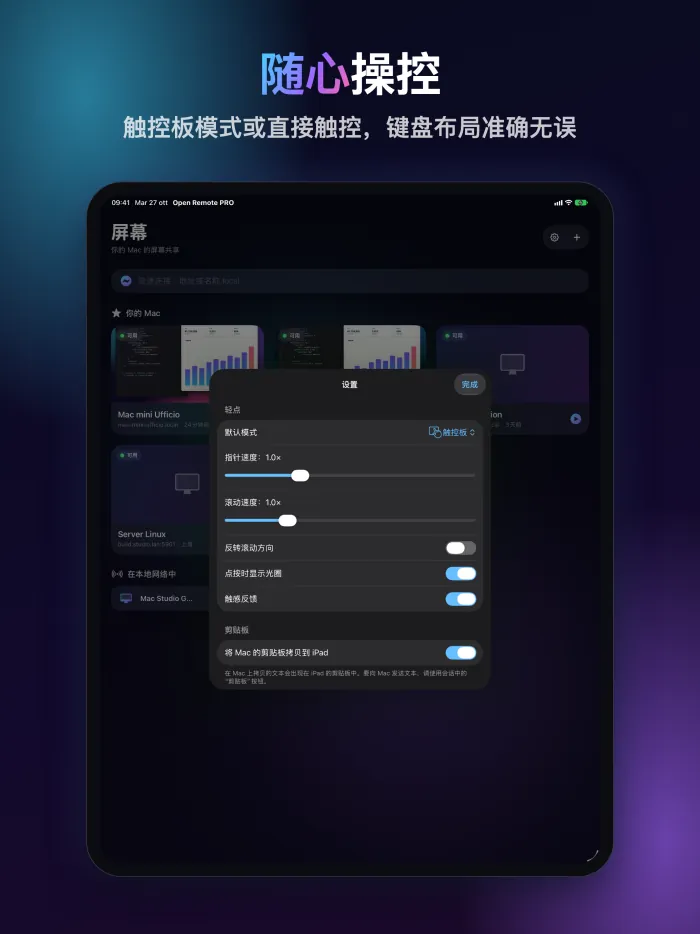
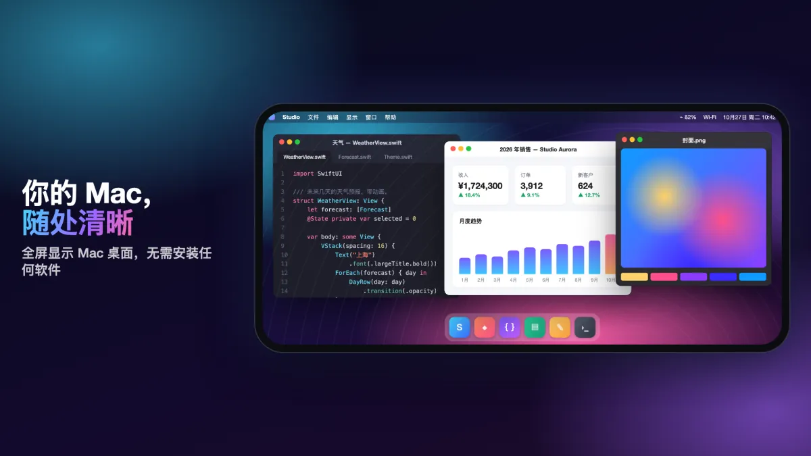
要求
高画质视频需要搭载 Apple 芯片、运行 macOS 14 或更高版本的 Mac，并开启屏幕共享（系统设置 › 通用 › 共享）。其他 Mac 和 VNC 服务器使用经典编码。在家或办公室以外的地方，请使用 VPN。
常见问题
需要在 Mac 上安装什么？
什么都不用装。在 Mac 上打开“系统设置 › 通用 › 共享”，开启屏幕共享。然后在 App 中添加这台 Mac（如果在同一网络中，它已经出现在列表里），用这台 Mac 上某个用户的名称和密码登录。
高画质视频需要什么条件？
一台搭载 Apple 芯片、运行 macOS 14 或更高版本的 Mac。其他 Mac 和 VNC 服务器使用经典编码。
在外面也能用吗？
可以，通过连接到 Mac 所在网络的 VPN 使用。不要把屏幕共享直接暴露在互联网上。
支持 Windows 和 Linux 电脑吗？
支持 Windows 和 Linux 上的标准 VNC 服务器。在 iPad 和 iPhone 上，还可以通过远程桌面 (RDP) 连接 Windows PC。
App 会收集哪些数据？
不收集任何数据：没有帐户、广告或跟踪。电脑列表、密码和密钥都保存在你的设备上，App 只连接你指定的电脑。
Android 版什么时候推出？
Android 版即将登陆 Google Play，支持手机、折叠屏手机和平板电脑。
更多解答请见支持页面（英文）。